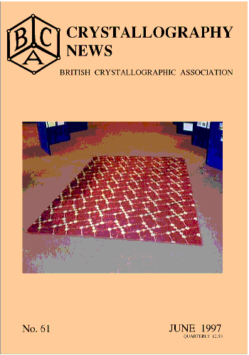
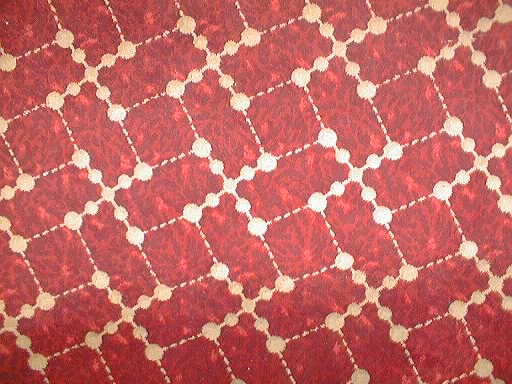
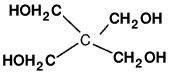
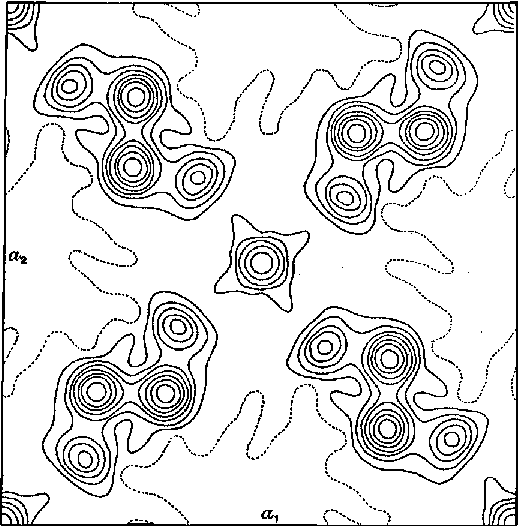

Cover Story

CRYSTALLOGRAPHY ON A CARPET
At the recent BCA meeting in Leeds John Robertson provided a historical exhibit with many photographs of early Leeds crystallographers, the Braggs' original camera and notebook containing his early X-Ray photographs, and a crystallographic carpet accompanied by the story below. Several retired crystallographers visiting the Poster Session reminisced about the times when Gordon Cox had called them into his office for 'discussion' while they stood on this very carpet. Over the years parts had become worn; the whole carpet was about to be consigned to oblivion in a waste skip during office renovations in the Chemistry Department at Leeds when John Robertson managed to rescue it, cut out the worn parts and have it cleaned and rebound to make the much admired carpet we saw at the Poster Session.

We are grateful to Richard Glazer of Oxford Cryosystems for providing the photograph on the front cover showing the carpet at the poster session in Leeds, and the close up above. They were both taken with a battery driven electronic camera, which records images at a resolution of 72dpi size 1024 by 768 pixels directly into memory without using film. It can store up to 120 standard images like that above. There is a built in flash attachment and a small colour display allowing pictures to be viewed and deleted. The pictures must then be read into a conventional computer for processing and printing.
This carpet depicts the crystal structure of Pentaerythritol, C(CH2OH)4
Sixty years ago, pentaeryritol made an interesting contribution to the correct understanding of the tetrahedral valency of carbon. During the 1920's there had been controversy over the spatial distribution of the bonds around an aliphatic carbon atom. Direct measurement of C-C bonds at that time had been possible only for some aromatic compounds, plus a few oxalic acid derivatives. No reliable study of an aliphatic system had been made. Pentaerythitol was a test case for this study.
Today, we know its three-dimensional structure to be:

However, in those early days of stereochemistry, a paper had been
published in 1923 which had claimed that the four bonds in this molecule
were planar, directed to the four corners of a square. This controversy was
discussed in the British Chemical Society's Annual Reports of 1929.
It was Gordon Cox and his co-workers (Llewellyn and Goodwin) at the
University of Birmingham who put this matter right. (This was prior to Cox's
appointment, in 1945, to the Chair here in Leeds) They carried out a
3-dimensional X-ray crystal structure analysis of pentaerythritol, showing
conclusively that the four C-C bonds were not planar at all but were
directed towards the four vertices of a regular tetrahedron. This was long
before computers, and before even Beevers-Lipson strips were available. In
those days it was one of the first 3-D analyses of crystal diffraction. The
paper was published in J.Chem.Soc., in 1937 (page 883-). Cox's Fourier
projection, a view down the 42 symmetry axis, based on the x,y
coordinates of all the atoms, is reproduced here.
The central carbon atoms lie on S4 axes. Around a different set
of S4 axes the four hydroxyl groups, from four separate
molecules, are hydrogen-bonded to one another in squares.The four C-C bonds
from the central atom look planar in this projection but, in
fact, two opposing bonds point upwards while the other two point down. The
essentially perfect tetrahedral symmetry of these bonds was derived from the
3-D coordinates, x, y, z, of the five carbons.
So how did all
this chemistry get onto a carpet?

In 1951, during the prestigious 'Festival of Britain', when leading industrialists from all parts of the UK were displaying their latest and best creations, crystal structure patterns were much-sought after, as exciting new designs for textiles, ceramics and other materials. JAMES TEMPLETON, Ltd, a carpet manufacturer in Glasgow, produced this unique carpet - (what you see here is only a small fraction of the original article!) - with its historic crystal structure pattern, specially for the exhibition in London. Then, following its display at the Festival, the carpet was proudly acquired by Professor Cox for his room in the School of Chemistry here (from 1952-60).
John Robertson
University of Leeds